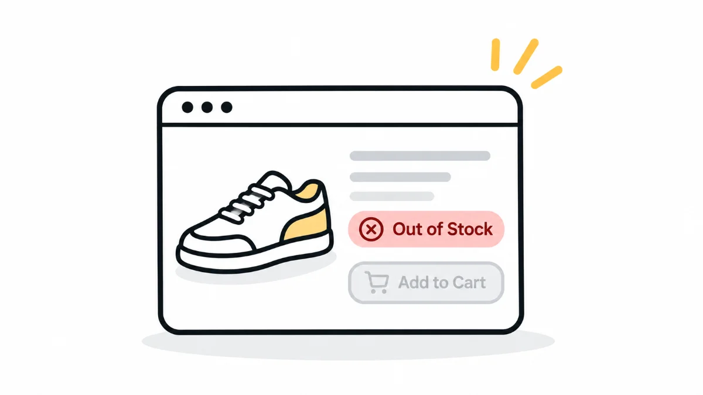

HeuristicsH5Error Prevention
The best error is the one that never happens
It's not about how beautifully you design an error message. It's about making sure that error never needs to appear in the first place. Prevention over cure, in medicine, in life, and in design.

Welcome back to Week 5 of my 10-part series on Nielsen’s Usability Heuristics.
This week, we're focusing on something that can save users from frustration before it even begins.
Heuristic #5: Error Prevention
It's not about how beautifully you design an error message. It's about making sure that error never happens in the first place.
A Real-Life Story: The Waterfall Detour
Let me take you back to 2021, a time when the world was just emerging from the first wave of COVID. Lockdowns were easing, tourist places were slowly reopening, and I decided to visit a beautiful waterfall in the Western Ghats of South India.
As I approached the area, I turned off the highway and took a smaller road leading to the main entrance.
After about five minutes of driving, I came across a long queue of cars. Oddly, many vehicles were reversing and turning back.
When I got closer to the gate, I finally saw the reason.
There was a small board that read:
“Only people with a COVID-negative report or two doses of vaccination allowed.”
Uh-oh. I had neither.
So, I had to turn my car around and leave. And I wasn't the only one. Dozens of others were doing the same thing.
Here's the thing: that small notice board was placed right near the gate.
If they had simply placed the same board on the main highway, people could have avoided wasting time, energy, and fuel just to be turned away.
This is the real-world version of a question we designers should always ask:
Could I have prevented this problem earlier in the journey?
UX Example: Out of Stock After Adding to Cart?
Let's say I'm shopping on an e-commerce app.
I see a product, I like it, and I add it to my cart. But only when I reach the checkout page, I'm told:
“This item is out of stock.”
Now I have to go all the way back, search for an alternative, and repeat the entire process.
It's annoying, isn't it?
Thankfully, many apps now show stock availability right on the product page. Some even display messages like “Only 2 left!”
That's error prevention in action. Users don't waste their time going through a process for something they can't actually buy.
Another Example: Smart Login Validations
Imagine a user entering their phone number like this:
98765o4321
Notice the mistake? They've accidentally typed the letter 'o' instead of the digit '0'.
Instead of waiting for the user to click Login and then showing a vague error like “Invalid number”, a good interface can identify the issue immediately and guide the user.
For example:
- “Please use digits only.”
- “Looks like there's a typo in your phone number.”
You're helping users avoid a mistake rather than waiting for them to make it and correcting it later.
That's error prevention.
Bonus: Slips vs. Mistakes: Know the Difference
This concept comes from Don Norman's theory of human error, and it's very relevant to Heuristic #5: Error Prevention.
Not all errors happen for the same reason. Understanding the difference between a slip and a mistake helps us design better experiences.
Let's look at both.
Slips
A slip happens when your intention is correct, but your action goes wrong.
You know exactly what you want to do, but something goes wrong while you're doing it. This often happens because of habits, automatic behaviour, or the way something is designed.
Real-life example:
Imagine you're going to brush your teeth.
You're used to picking up your toothpaste from the same place every day. But today, someone has accidentally placed shaving cream in that spot.
You pick it up without noticing and start brushing with it.
Why did that happen?
Because your brain was on autopilot. You intended to pick up the toothpaste, but your action went wrong.
UX example:
You intend to click Reply in an email, but accidentally click Reply All because both options are placed next to each other.
Your intention was correct, but the interface made it easy to slip.
How can we prevent slips in design?
- Don't place destructive or sensitive options, such as Delete or Reply All, too close to frequently used safe actions.
- Use clear labels and proper spacing.
- Add confirmation steps for critical actions.
Mistakes
A mistake happens when the intention itself is wrong.
This usually occurs because of incorrect assumptions, lack of knowledge, or misunderstanding the situation.
Real-life example:
You experience body pain and assume it's because of your recent gym workout. But the actual reason is that you have a fever.
You made an incorrect assumption about what was happening.
UX example:
A new user tries to enter a PAN number in a field meant for a GSTIN, but the form doesn't clearly explain what information is required.
The user makes a logical assumption, but it's not what the system expects.
How can we prevent mistakes in design?
- Use clear instructions and labels.
- Avoid ambiguous terms.
- Provide inline help or tooltips wherever necessary.
- Use smart defaults and real-time feedback to guide users.
The key difference is simple:
With a slip, the user knows what they want to do but performs the wrong action. With a mistake, the user has the wrong understanding or intention in the first place.
And as designers, we need to think about both.
Key Takeaways
- Error Prevention = Peace of Mind
Catch potential problems before they become blockers. - Not All Errors Are Equal
Understand whether users are making slips or mistakes, and address each differently. - Clarity and Timing Matter
The earlier you alert users to a potential issue, the less frustrating the experience will be. - Prevention Feels Like Magic
When a system guides users away from failure, they feel smart, not stupid. And that's the power of good UX.
Concluding Thought
Great UX doesn't wait for users to fail. It removes obstacles before they appear.
Don't just write great error messages.
Design systems that don't need them.
Because the best error is the one that never happens.